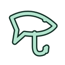
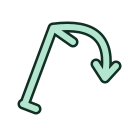
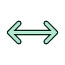
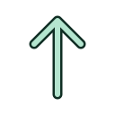
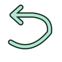
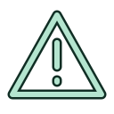
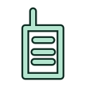
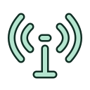

Real AI Fishing — Field Manual
Lure rig
While ready, hold right joystick press, point up and release. Left X cycles an inline spinner (casting spoon at sea), paddle-tail jig and diving minnow. Turn the reel to work the lure. Use a steady retrieve for the spinner/spoon; work the jig more slowly and try short pauses or rod twitches with the jig and minnow. Lift on a bite, then fight and land normally. A lure left unattended will not attract strikes.
Lure fishing is available at every location, with locally appropriate fish. Retrieve fully before changing lures or methods. All fishing styles share your equipped tackle tier: buying Reed, Heron or Kingfisher upgrades classic, fly, feeder and lure rods together. Each style keeps its own reel and construction, with the tier’s matching colours, grip materials and fight bonuses.
Feeder rig
While ready to cast, hold the right joystick press, point left for classic tackle right for the cage feeder or up for lures, then release the press to select. Release in the centre to cancel. The classic option is a fly rod at rivers. The selector reserves right-stick turning until the stick returns to centre; left-stick voice remains available. On desktop hold Tab, choose with Left/Right/Up, then release Tab.
Feeder fishing is available at Lakeside, Lake Pier, Gray Pier, Bell Park Pier and Meadow Bend. It is unavailable at the fast Boulder Run trout stream and coastal waters. Cast the cage, allow it to settle, watch the quiver tip for knocks and lift to set the hook. Reel and land as usual. Retrieve the empty rig fully before changing rigs or hook bait.
Left X cycles earthworm, sweetcorn, maggots and bread. Worms favour perch, tench and river bottom feeders; corn favours carp, bream and tench; maggots favour smaller coarse fish; bread favours roach and chub. Local species remain restricted to their habitat. Casting repeatedly into the same patch builds groundbait attraction, which gradually decays. Reeling a waiting feeder lifts it off the bottom and pauses bites until it settles again.
Your first cast
- Open the menu with right B. Choose a location, avatar and comfortable turning mode. Controller alignment is under Controls. Turn off Show pictograms there to hide rod, radio and HUD symbols; the choice is saved. Bait and catch labels remain visible.
- Choose bait with left X. Look toward open water: the casting marker uses the centre of the headset view.
- Hold the rod trigger, sweep back, then forward, and release. Cast toward the marker. Solid ground blocks casting.
- Watch the float and listen for the bite. Lift the rod to set the hook.
- Use the crank, rod movement, line colour and rumble to bring the fish in.
Natural feeding ripples indicate activity. Bait, location, cast sector and recent catches affect which fish feed there. Moving to another sector can help when a school has thinned.
VR controls
| Action | Control |
|---|
| Walk / turn | Left stick / right stick. Snap or smooth turning is configurable. |
| Cast | Hold right trigger, backstroke, forward stroke, release. |
| Select bait | Left X while ready. |
| Reel | Hold left grip or trigger beside the crank and circle your hand. |
| Inspect catch | Hold left grip. Either stick rotates the fish; release grip to hang it from the hook again. |
| Release catch | Press left trigger while holding the fish with grip. Right A or left Y also releases. |
| Stow / take rod | Right grip at your right hip. |
| Field Guide | Left grip at the left hip; use its buttons, X/Y or sticks to browse. |
| Menu / quit | Right B; Quit game is in the footer. |
| Menu scrolling | Right stick, drag a scrollbar with trigger, or use ↑ / ↓. |
You can walk and turn while a caught fish hangs on the hook. Stick locomotion pauses only while holding the catch offhand, when the sticks rotate it. Room-scale movement remains available.
Playing a fish
Keep tension away from both extremes. The line colour and rod pulses are the main feedback. During a run or deep pull, stop winding. An inward rush creates slack: wind faster. Follow a directional symbol and hold the rod against the pull; strong repeated pulses confirm an effective counter. During a jump, stop reeling and give the indicated quick sideways tug.
Three missed counters, prolonged strain or sustained slack can lose a fish. Bring a tired fish all the way to the water's edge to land it. The catch label shows its name, length and weight. Rewards and equipment are in the Field Guide and menus.
River fly fishing
Meadow Bend and Boulder Run use dry flies or nymphs. Cast with a backswing and forward stroke. Additional strokes extend the locked cast; the extension symbol confirms this.
Hold left grip near the line above the handle and pull to strip line. Sweep upstream, against the current, to mend and improve the drift. The loop symbol confirms a successful mend; a warning means extra drag. Use the reel only against inward rushes or for the final tired fish: winding at the wrong time adds strain.
Quiet symbols
Small symbols appear near the rod when useful. Bait selection and catch measurements retain text; instructions, balance and records live in menus or the Guide.

Lure rig (selection menu)
Feeder rig (selection menu)

Release to cast

Cast extended

Lift / strike
Ease off / limit reached

Upstream mend
Wind / retrieve

Strain, slack or extra drag
Controller tracking

Hold trigger to talk

Transmitting to all waters
The Fish Guide covers 38 species. Each page lists habitat, preferred presentation, eligible methods and named waters; catching a fish reveals its identity and records your longest specimen. The expanded roster includes silver bream, ruffe, ide, asp, leervis and Atlantic chub mackerel.
Field Guide and tackle
The Guide contains location, earnings, tackle and discovered species. Uncaught species remain silhouettes with habitat and bait hints. Catching a species reveals its identity and records your longest specimen. These personal records and tackle purchases are saved locally.
While holding the Guide, left trigger opens camera mode, right trigger takes a photo and right A switches selfie view. Its physical buttons also switch view and take a photo. The Guide pauses fishing input. Change rods or travel after finishing the cast and releasing your catch.
Servers and accomplishments
Use Together to host or join by address and UDP port. Up to eight anglers share their poses, tackle and catches. Nearby voice is positional; the shoulder radio reaches all waters. Grab the radio with left grip and hold left trigger to transmit. Release grip to dock it. Push-to-talk uses left stick click.
The menu's Leaderboard button shows the server's most fish caught, most shekels earned, heaviest and longest fish, and exceptional catches. Exceptional means at least 112% of a species' typical length, or a rare predator. Earnings are cumulative catch rewards; purchases do not reduce them. Each category shows its top 50.
Only catches observed while connected count. Disconnected anglers remain on the server's board, and reconnecting from the same player profile resumes that identity even after a name change. Leaderboards are saved only on the host/server. Your device retains a private random identity token in multiplayer preferences, not a leaderboard copy. Keep that profile to retain your identity.
Server operators: see dedicated server build and persistence notes. The game uses direct UDP connections; Internet hosts need a reachable UDP port.
Desktop practice
| Action | Key / mouse |
|---|
| Cast / strike / release | Hold and release Space to cast; tap to strike or release. |
| Reel / faster | R or left mouse / Shift. |
| Counter / mend | Arrow keys. In rivers: Left mends upstream, Right adds drag. |
| Aim / look | Right-drag / middle-drag. |
| Walk / turn | WASD / Q and E. |
| Bait / menu | Number keys or bait tiles / V or menu symbol. |
| Guide / rod | G / J. |
| Guide camera / shutter / selfie | C / Space / F while the Guide is open. |
| Nearby voice / radio | T / hold B. |